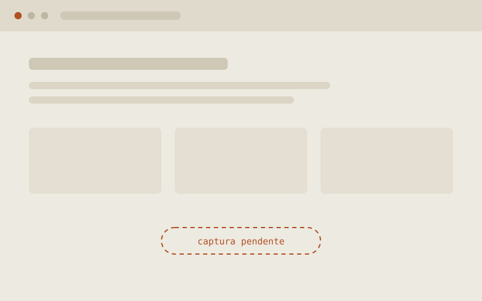

What I do in Moodle
I work with the platform on every front, from the server to the experience of the person taking the course:
- Administration — installation, configuration, roles and permissions, environment maintenance.
- Plugins — installing, configuring and developing plugins for specific needs.
- Themes — visual and navigation customization to match each institution's identity.
- Integrations — connecting to external systems over REST APIs.
- SCORM — packaging and publishing interactive content inside courses.
- Reporting — extracting and organizing participant tracking data.
- Version migration — upgrading instances while preserving content, data and customizations.
Much of this work happens in environments belonging to public institutions and international networks, where the platform has to hold up under real cohorts and keep participant data intact across several editions of a course.
Environments built
ObsPLE-PL2 — Observatory of Portuguese as a Foreign / Second Language
Virtual Learning Environment developed for an international network affiliated with CNPq and IILP/CPLP. The project involved customizing the Moodle platform, laying out the educational content and implementing improvements to navigation, information organization and the learning experience. It was used across three editions of the course, with around 750 users.
- Institutions
- CNPq · IILP / CPLP
- Users
- ~750
- Editions
- 3
- Stack
- Moodle, PHP, HTML, CSS, JavaScript
(Re)Integro Project — Ministry of Justice / OEI
Virtual Learning Environment developed to support training and social reintegration initiatives promoted by Brazil's Ministry of Justice and by OEI. The project covered building and configuring the Moodle platform, organizing the educational environment and implementing features that ensured a structured, accessible learning experience for participants.
Cruzando Fronteiras — UFRGS / OEI
Virtual Learning Environment developed for the Cruzando Fronteiras project, carried out in partnership with the Federal University of Rio Grande do Sul. The work involved building, customizing and configuring the Moodle platform, creating an organized digital structure for course delivery, educational activities and participant tracking.
Screens
screenshots pending
These environments have restricted access. The placeholders below will be replaced with real screens, favouring administrative and course-structure views with no participant personal data.

Related
The production of the content that feeds these environments is organized in FLOW, SENAI Bahia's authoring system.